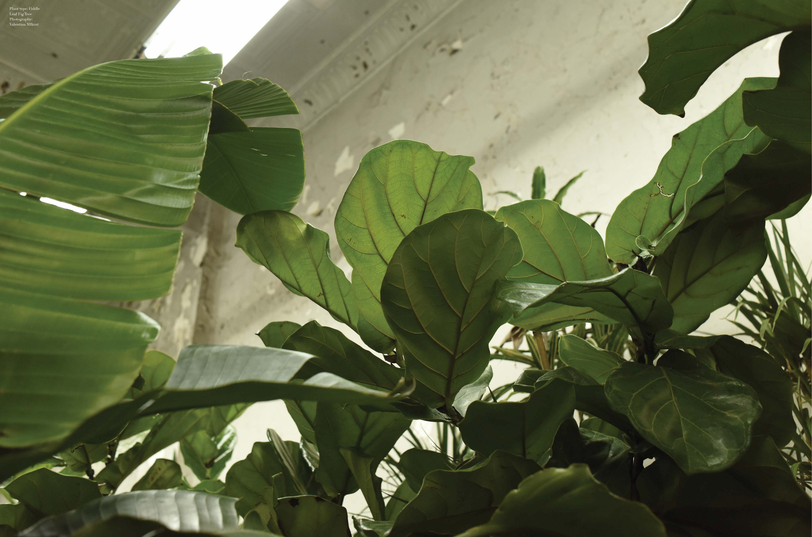
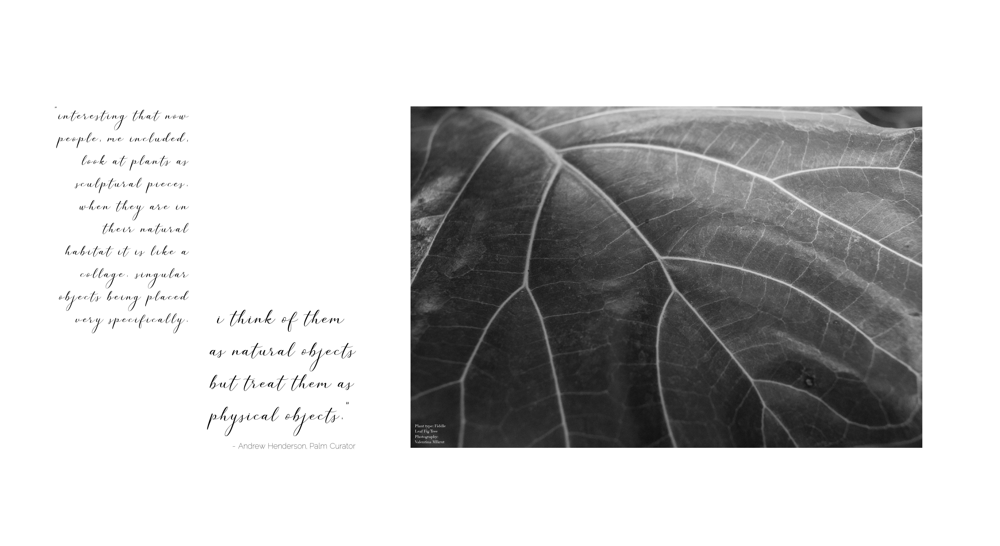
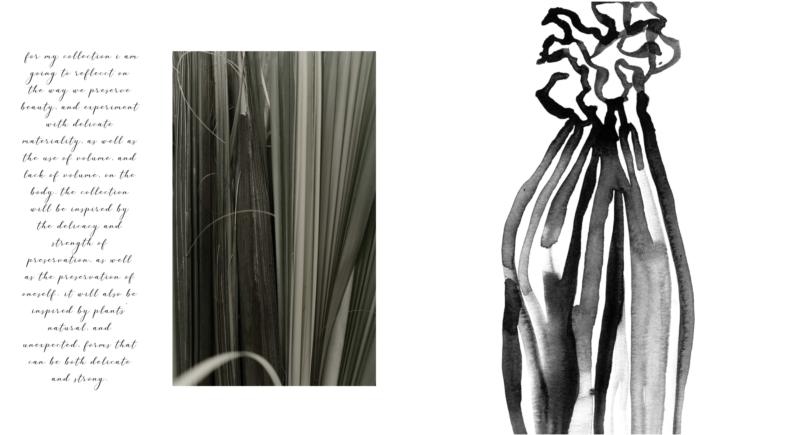
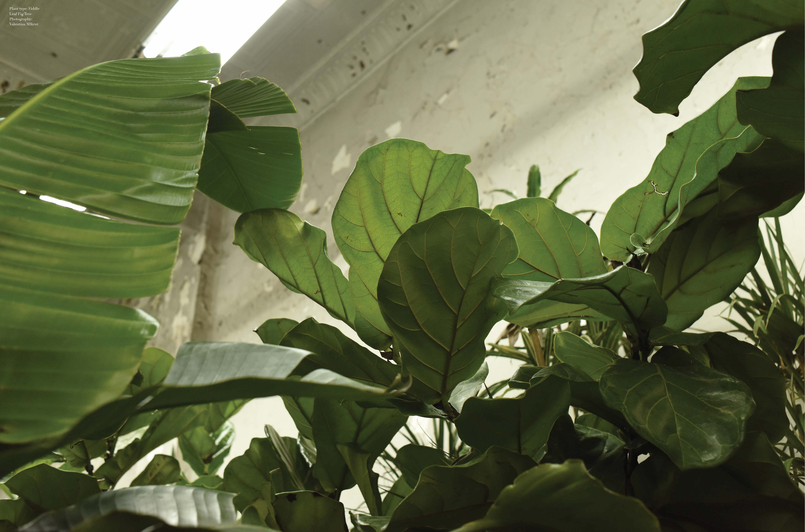
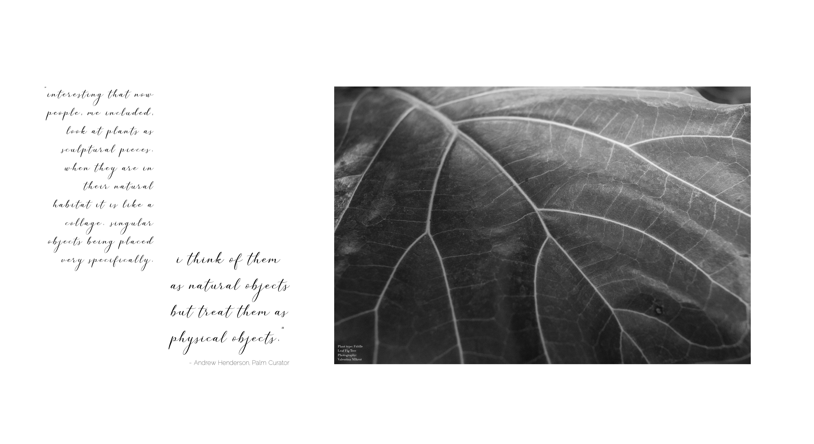
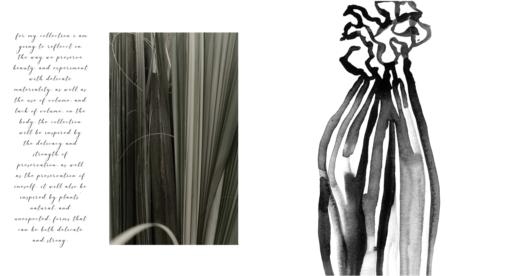

BACK
PLANTS AS INSPIRATION
PARSONS SCHOOL OF DESIGN / VISUAL COMMUNICATION STUDIO 2
This visual research book is the outcome of a visual communication project in which I had to choose an object as inspiration and create a visual research book or magazine that was inspired by the object with the goal of informing a clothing collection. From the object, plants, that I chose, I conducted research that I used for the curation and design of a visual research book that includes my photographs from my exploration of plant species, illustrations, quotes from interviews I conducted and conclusions. The collection aims to reflect on the way we preserve beauty. It will include experimentation with delicate materiality, as a well as the use of volume, and lack of volume, on the body. The collection will be inspired by the delicacy and strength of preservation, as well as the preservation of oneself. It will also be inspired by plants’ natural and unexpected forms that can be both delicate and strong.
 




